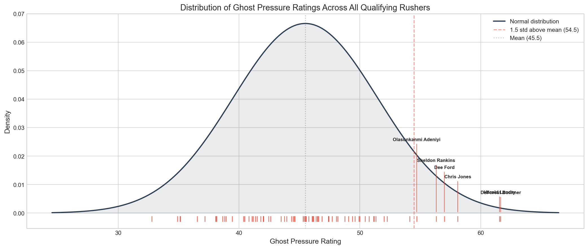
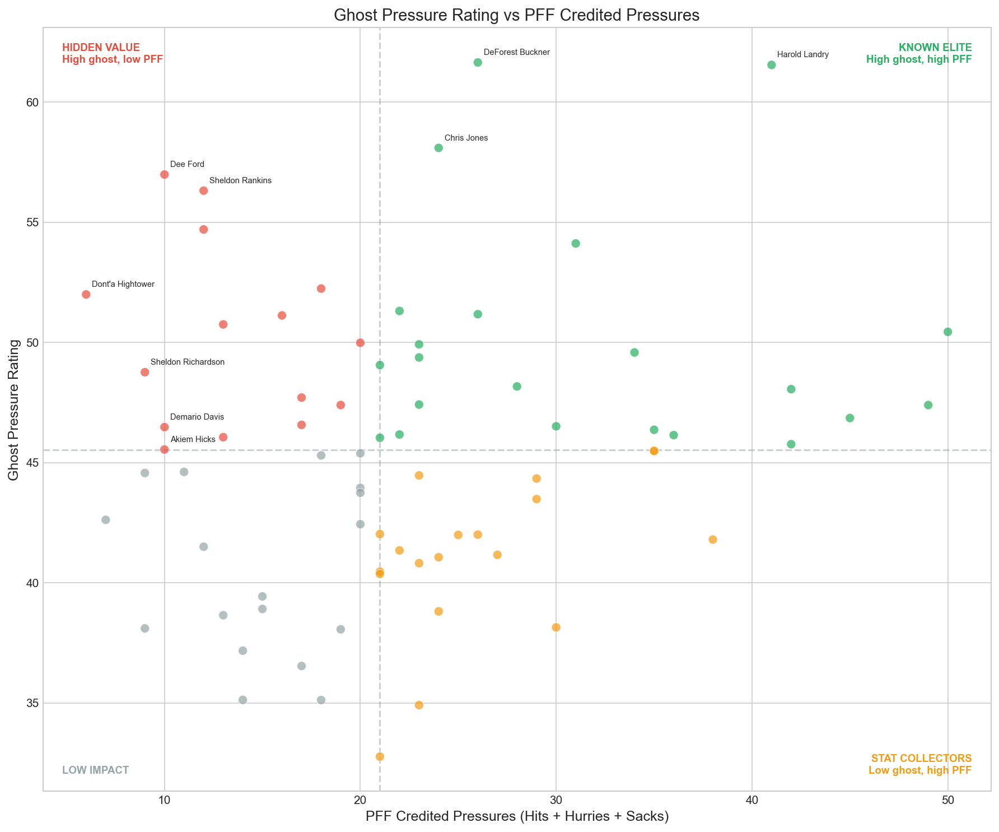
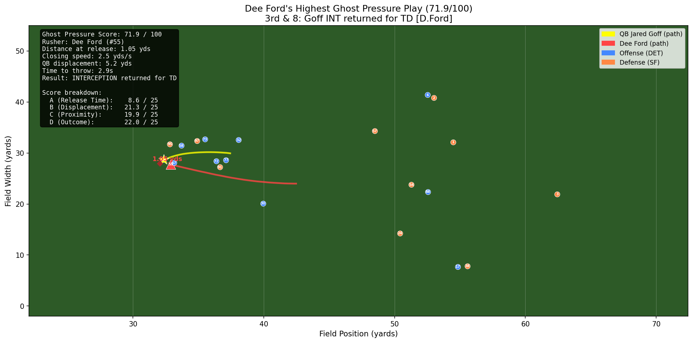

Rating pass rushers who disrupt quarterbacks without showing up in the box score.
Jump to resultsPFF tracks three pass rush outcomes: hits, hurries, and sacks. If a rusher doesn't record one of those, he gets no credit.
But some guys change the play without touching anyone. The QB feels them coming, throws early, moves off his spot, makes a bad read. None of that shows up anywhere.
We built a metric for it. We call it ghost pressure.
The question: Can we measure how much a pass rusher degrades a quarterback's decision-making, even when he never touches him?
Coaches and scouts evaluate pass rushers using PFF grades and pressure stats. If a defender is disrupting quarterbacks but never recording a hit, hurry, or sack, he looks invisible in the data. Ghost pressure makes him visible.
We filtered to 3rd and 7+ yards to go, no play action, traditional dropback. These are obvious passing situations where routes develop downfield, the QB needs time, and pressure has the highest impact. This gave us 924 qualifying plays across 122 games from Weeks 1 through 8 of the 2021 NFL season.
On each play, we identified the closest pass rusher to the QB at the moment of release and scored him on four factors.
Ghost Pressure is a composite score from 0 to 100, built from four equally weighted components:
Compared against the QB's personal average release time on 3rd and 7+, plus a universal 2.8s comfort threshold.
Displacement from initial dropback position, blending absolute distance moved and how far above the QB's own average.
Distance to the QB and closing speed at the moment of the throw. 1.5 yards at full speed is far more threatening than 5 yards at a jog.
Sacks (25), interceptions (22), incompletes (18), scrambles (15). Completions scale down by yards gained.
Not every play involves real pressure. If the QB stood still and nobody was near him, the defense won through coverage, not pass rush. We remove plays where QB displacement was under 1 yard and the closest rusher was more than 3 yards away. This isolates actual pressure from coverage-driven outcomes.
Release time and displacement are compared against each QB's personal averages on 3rd and 7+ situations specifically, not all plays. A QB moves differently on 1st and 10 than on 3rd and 12. By using situational baselines, we ensure the comparison is fair.
We ranked all 74 pass rushers with 5 or more qualifying plays. The distribution is roughly normal, with a few clear outliers above 1.5 standard deviations.

Each tick mark is a rusher. Outliers above the red dashed line are elite ghost pressure generators.
This is where it gets interesting. We plotted each rusher's ghost pressure rating against their PFF credited pressures (hits + hurries + sacks).

Four quadrants reveal different rusher profiles. The red quadrant (top left) is the headline: high ghost pressure, low PFF credit.
Hidden value (top left): These rushers generate real disruption that PFF doesn't capture. They're being undervalued by traditional metrics.
Known elite (top right): High on both. Our metric agrees with PFF. These guys are just dominant.
Stat collectors (bottom right): High PFF numbers but low ghost pressure. They accumulate stats without consistently disrupting the QB's process.
September 12, 2021. Second quarter, 1:20 remaining. Lions trail 10-21. 3rd and 8 from the Detroit 32. Shotgun formation, Cover-3 Zone.
Dee Ford closes to 1.05 yards from Jared Goff at the moment of release. Goff is flushed 5.2 yards off his dropback spot and throws a rushed pass to T.J. Hockenson. The ball is intercepted by Dre Greenlaw and returned 39 yards for a touchdown.
PFF noted Ford's contribution in brackets: [D.Ford]. But he recorded zero hits, zero hurries, zero sacks on the play. By traditional metrics, this play doesn't exist for Dee Ford. Ghost pressure score: 71.9 out of 100.

Tracking data: Ford's path (red) and Goff's path (yellow). 1.05 yards apart at release.
Video: Ford's rush forces Goff into the interception.
Goff threw in 2.9s (near his avg). He held the ball despite the pressure.
5.2 yards off his spot, well above Goff's 3rd-and-long average.
1.05 yards at release, closing at 2.5 yds/s. Right on top of him.
Interception returned for a touchdown. Maximum disruption.
| Rank | Player | Team | Pos | Ghost Score | PFF Pressures |
|---|---|---|---|---|---|
| 1 | DeForest Buckner | IND | DT | 61.7 | 26 |
| 2 | Harold Landry | TEN | OLB | 61.5 | 41 |
| 3 | Chris Jones | KC | DT | 58.1 | 24 |
| 4 | Dee Ford | SF | DE | 57.0 | 10 |
| 5 | Sheldon Rankins | NYJ | DT | 56.3 | 12 |
| 6 | Olasunkanmi Adeniyi | TEN | OLB | 54.7 | 12 |
| 7 | Nick Bosa | SF | DE | 54.1 | 31 |
| 8 | Malik Reed | DEN | OLB | 52.2 | 18 |
| 9 | Dont'a Hightower | NE | OLB | 52.0 | 6 |
| 10 | Odafe Oweh | BAL | OLB | 51.3 | 22 |
Highlighted: Dee Ford (10 PFF pressures, ranked #4) and Dont'a Hightower (6 PFF pressures, ranked #9) are the biggest gaps between ghost pressure and traditional stats.
We are not accounting for coverage scheme quality, number of blockers, or designed QB movement. A QB might move because the coverage held and he's buying time, not because the rusher flushed him. Our pressure gate filter (removing plays with low displacement and distant rushers) mitigates this but doesn't eliminate it entirely.
Ghost pressure partially overlaps with PFF hurries. A rusher who forces a quick throw may earn both a PFF hurry and a high ghost pressure score. The metric is not claiming to measure something entirely separate from existing stats, but rather to capture the full spectrum of disruption, including the cases where PFF records nothing.
Sample sizes are small. The strictest filter (3rd and 7+, no play action, traditional dropback) yields 924 plays across 8 weeks. The rankings are directional, not definitive.
The scoring weights are equal (25 points each). A more refined version would optimize weights based on which components best predict negative offensive outcomes. We chose simplicity and transparency over optimization.
NFL Next Gen Stats tracking data (10Hz), PFF scouting data, and nflverse game/player metadata. 122 games, Weeks 1-8, 2021 NFL season. 8,557 pass plays total, 924 qualifying after filtering. Analysis and visualizations built in Python.